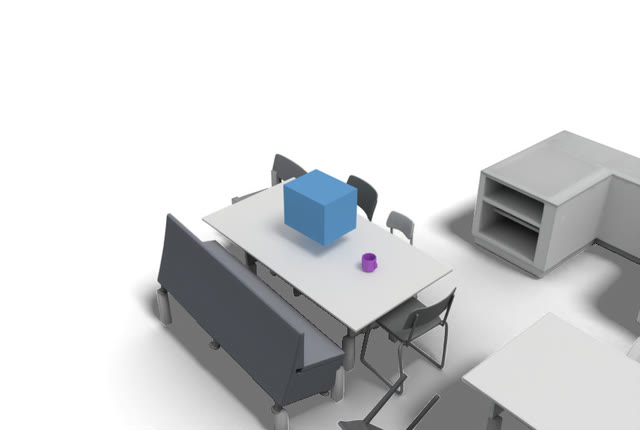
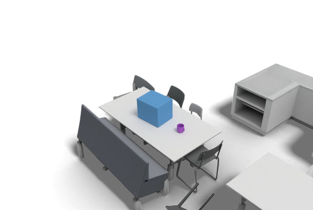
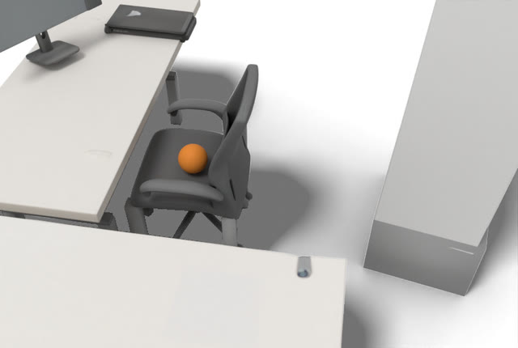
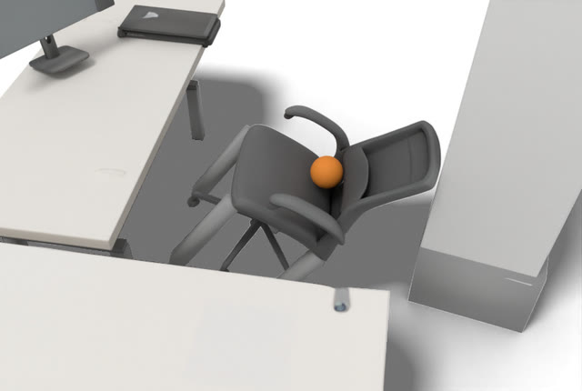
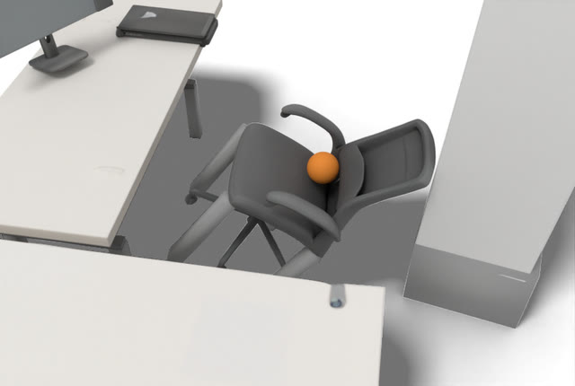
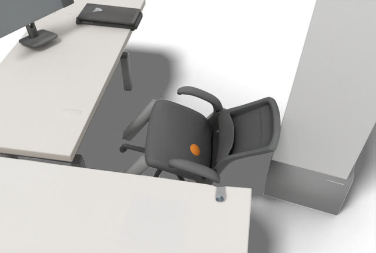
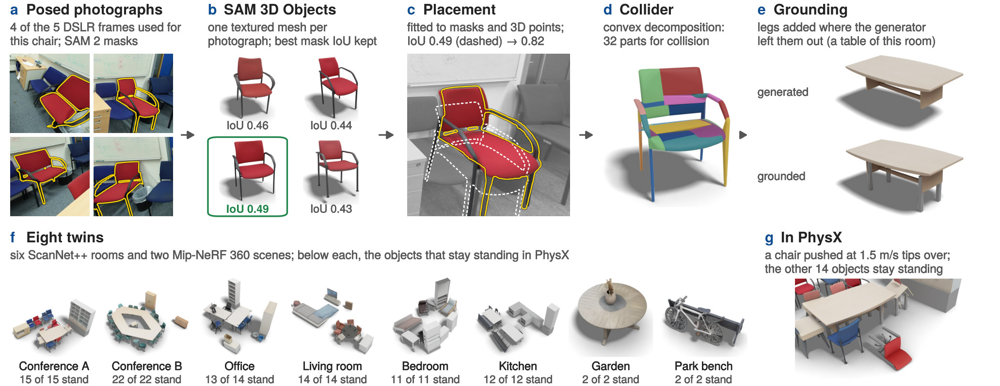

Scans of real rooms
Eight real places are turned into simulation-ready scenes: six ScanNet++ rooms and two outdoor Mip-NeRF 360 captures (a garden and a park bench). Each scanned object becomes a textured mesh with a collider, is placed in the room and grounded. The scans are never used in training. PhysX provides the ground-truth motion in these scenes as well.
Key frames in two scanned rooms
A crate is dropped onto a kitchen table





An office chair with a ball on its seat is tipped






The frames of Fig. 6 of the paper: two ScanNet++ scans not used in training, drawn with the scanned furniture and the moving bodies only. NeuWorld is fine-tuned here for 14,000 updates on simulations that resemble scanned rooms.
How a scan becomes a simulation-ready scene

From posed photographs to a simulation-ready twin: SAM 3D Objects reconstructs each object, which is then placed, given a collider and grounded (Fig. 7 of the supplementary).
On 70 simulations in scanned rooms, all three NeuWorld variants have a lower position error than a prediction in which nothing moves; the position error of NeuWorld+Reg is 57% of the no-motion error. The error is still 3.0 to 3.9 times that on the same motion families in the test set, mostly because of furniture shapes never seen in training. The clips are chosen among the simulations where NeuWorld follows PhysX.